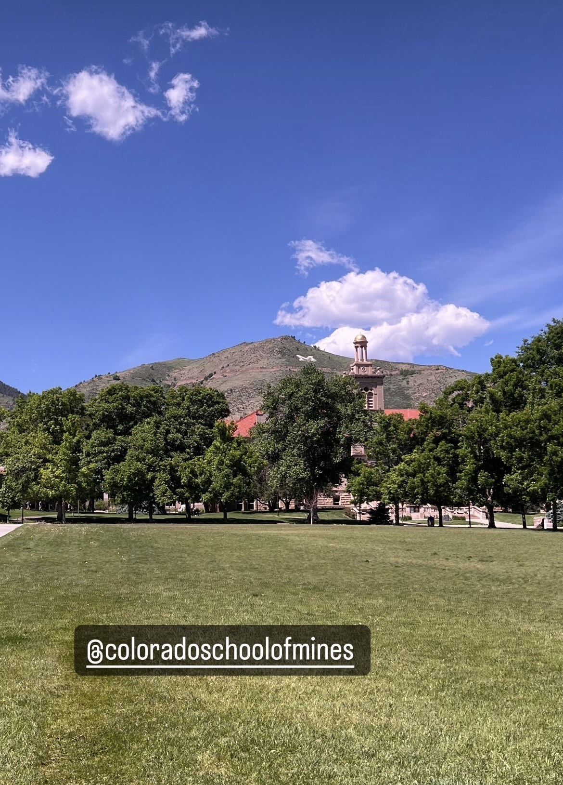

Developed Python pipelines for seismic event detection using STA/LTA with DASCore and applied a pre-trained autoencoder for anomaly detection. Work focused on preprocessing, spectral reconstruction, unit testing, and serial scalability benchmarking.
🔗 View GitHub CodeSeismic STA/LTA & Autoencoder
Testing and Scalability

 Python
Python.png) PyTorch
PyTorch DASCore
DASCore GitHub
GitHub